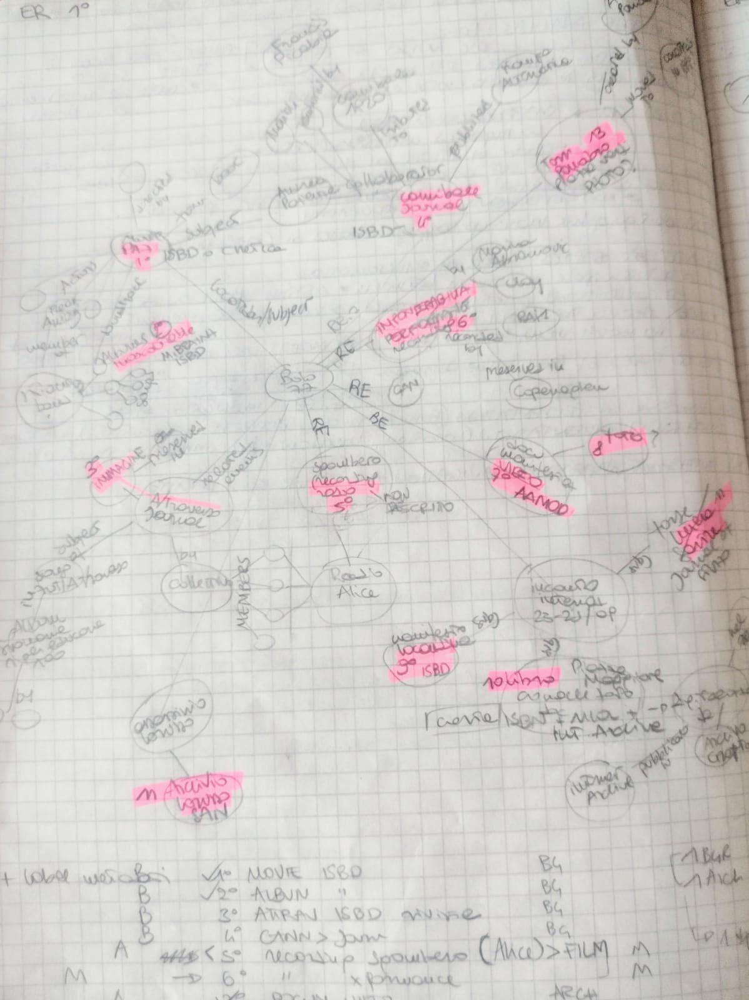

Idea
In the frame of the complex, libertarian and creative "1977 movement", Bologna represented a key place where political events, as well as cultural and creative happenings took place and deeply signed the city and the national contemporary history.
On 11th of march, during a violent riot moved from a contestation between different sides of student associations, the overreaction of the police led to the death of the young Francesco Lorusso medicine student, shooted in the street.
This event shocked people, sympathizers and activists that started converging spontaneously in Piazza Verdi and decided for a protest march. Francesco Cossiga, Minister of the Interior, sent then armored vehicles to the center of Bologna, accentuating the political conflict. Radio Alice, an emblematic free radio, was forcely closed the next day.
These events provoqued several reactions, from the manifestation organized few days after from the confederal unions to ban the student's protest, to the so-called "Manifesto agaist repression" signed by Jean Paul Sartre together with other French intellectuals, including Simone de Beauvoir, Michel Foucault, Gilles Deleuze and Felix Guattari in support of people arrested during the riots.
Neverteless, the city at the time was also scenario for cultural creativity and production. In June Marina Abramovic and Ulay performed their fundamental "Imponderabilia" at GAM, and in September, during the 3-days "Convegno internazionale contro la repressione", about one hundred thousand young people transform the city into a stage for theatrical and musical representations and cultural initiatives of all kinds as well as for discussing the future of the student movement.
The conference ends with a procession and a show by Dario Fo in Piazza VIII Agosto. Without a strategic agreement between its various souls, the three days of September probably marks the political end of the Movement.
This intense period marked the collective memory of the city and we have tought it was a super-fertile subject for our Linked Open Data project: BoLoD 1977
The items
Despite the fact that we found a lot of interesting items related each other and illustrating the crucial political and cultural events running in Bologna in 1977, we finally have choosen the 10 ones that could show the wider variety of typology in the LAM domain as well as different kind of metadata standards used for their description.
For every item, apart from the title and some information, we outline the typology, the cultural institution that described it, the standards used (declared from the institution, self evident or infered/applied by us), and the FRBR level of the description. We realized indeed that different FRBR levels were present in our items descriptions and that it was important to clarify which level would have been involved in order to model correctly the ER and following models.
In one case, because of the sound relevance of the item for the subjetc analysed - the audio recording of the last RadioAlice radio broadcast - we decided to try to insert anyway the item despite it was not already described: we create the a .... from scratch a description based on METS-MODS LC standards.
Also the Imponderabilia record has required several screening, research and e-mail, and finally we found an interesting description of the performance itself instead of its recording or photo-reportage by MIT.
Paz!
Movie
Full record from Fondazione Cineteca di Bologna.
Metadata stadards: METS applied.
FRBR level: expression
---
An overall depiction of the period, focused on the comic's author Andrea Pazienza.
Archivio dell'Associazione Pier Francesco Lorusso.
Archival Fond
Full record from IBC Archivi.
Held by Istituto Storico Parri.
Metadata stadards: ISAD(G), ISAAR(CFP), ISDIAG, EAD, EAC-CPF, EAG, DC declared.
FRBR level: item
---
During the 11th of March riots, a young student, Francesco Lorusso, was shoted and died along Via Mascarella.
A/traverso.
Magazine
Full record from ACNP.
Metadata stadards: MARC self evident.
FRBR level: manifestation.
---
.....
Inascoltable.
Music album
Full record from MusicBrainz.
Metadata stadards: MMD declared.
FRBR level: expression and manifestation
---
The first, incredibly unfindable 1977 Skiantos' album. The band, creator of "demential punk", was based on Bologna.

Le ultime voci di Radio Alice.
Audio recording
Full records autodone.
Metadata stadards: ISBD, METS applied.
FRBR level: audio recording manifestation
---
On 12th of March Radio Alice headquartes was moved away from the police.
Access the item from Radioalice.org
Imponderabilia.
Performance
Full record from Dome MIT Library.
Metadata stadards: DC self evident.
FRBR level: manifestation.
---
Marina Abramovic and Ulay performance at GAM - June 1977.
Access the performance recording from Youtube.
© MIT Permission Policies.
Manifestazione contro i disordini all'università.
Video recording
Full record from AAMOD.
Metadata standards: ISAD (G) and ISAAR (CPF) declared.
FRBR level: expression, manifestation (pellicola, cd, digital image) and items (archival fond)
---
On 16th of March the confederal unions organized a manifestation against the riot violence: students and Lorusso brother's were not admitted.
Access the item from Youtube.
Credits https://www.aamod.it/crediti/.

Incontro internazionale contro la repressione per un nuovo ciclo di lotte.
Poster
Full record from Fondazione Gramsci Emilia-Romagna.
Metadata stadards: ISBD consolidated ed. applied (ISBD NBM declared).
FRBR level: physical manifestation.
---
A 3-days (22-24 September 1977) "Convegno internazionale contro la repressione", was organized in Bologna.
Piazza Maggiore era troppo piccola.
Book
Full record from MLOL - Internet Archive.
Metadata stadards: MLOL DC, Internet Archive??.
FRBR level: digital manifestation
---
Hundred thousand young people transform the city into a stage for parties, theatrical and musical representations, political-cultural initiatives of all kinds, while inside the sports palace the most politicized groups struggled hard on the future of the student movement. The conference ends with a procession and a show by Dario Fo in Piazza VIII Agosto.

Tre Colonne.
Sculpture
Full record from MAMbo.
Metadata standards: CIDOC-CR applied.
FRBR level: item.
© Comune di Bologna.
---
The so-called Pomodoro's Totem, became a symbol of the 3-days International Conference. People used the colums as structure for a tents camp where sleep.
Conceptual map and E/R model
- All
- App
- Card
- Web
{kind=link}
{kind=link}
{kind=link}
Metadata analysis and alignement
Theoretical model
FRBR issues, centrality of collective agents, conceptual definition timespan-VS single event?? qui??
We started analysing the metadata related to every item, and we construct a first, really complex representation of the interconnection between items and entities. We then go further to abstract every possible relation to people, places, time and concent by simplifying the nodes and enriching the edges towards them.
{kind=link}
Conceptual model
RDF production
.........
RDF representation
......
Team
Dhdk fisrt year students with different background...

Camilla Neri
Chief Executive Officer
Ilaria Rossi
Product Manager
Alisia Zarbo
....Enrica Zani
Metadata analysis and alignement, copyrigth issues, ???About Us
Sed ut perspiciatis unde omnis iste natus error sit voluptatem accusantium doloremque